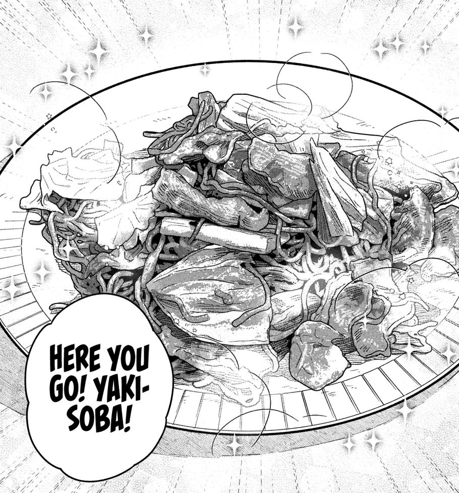

Yakisoba Recipe

A Yakisoba recipe I finangled together from reading "How to Grill Our Love" the manga and watching Rie's Tasty
youtube video on yakisoba
Ingredients
- Grated ginger
- Sliced or minced garlic
- Sesame Oil
- Tonkotsu Sauce
- Oyster Sauce
- Salt
- Pepper
- Thin Pork Slices
- Sliced Cabbage
- Yakisoba Noodles
Steps
- Add sesame oil to heated pan
- Add garlic and ginger to pan
- Add pork to pan let it brown a little bit
- Add cabbage once pork starts browning and let it break down
- Remove pork and cabbage from pan (you will add it back later)
- Add more sesame oil to pan, add noodles + water--let the noodles separates/cook a little bit
- Add pork and cabbage back to pan with noodles
- Add 3 tablespoons of oyster sauce and 1 tablespoon of tonkotsu sauce along with a pinch of salt
- Mix
- Garnish with pepper and enjoy